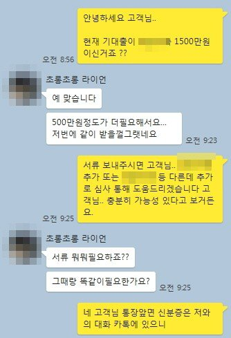
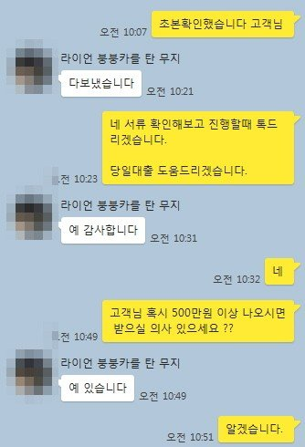
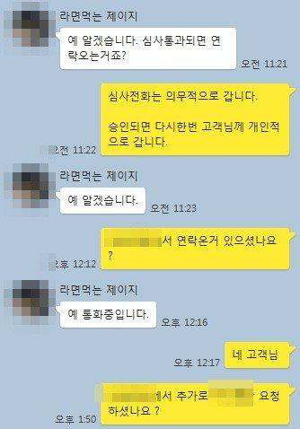
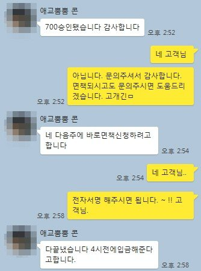

개인회생 같은 금융사 한달이내 추가자금 700만원 승인 사례!!
안녕하세요 뱅크앤론 김한수 상담사입니다. 4월 첫째주 월요일 오늘 소개해드릴 고객님은 최근 대출 받고 한달이내 같은 금융사 추가 대출 사례를 안내해 드리겠습니다.
고객님께서는 4대보험 가입직장인 연봉 3000만원 변제금 180만원 26/25회 미납0 조건입니다. 최근 3월12일에 저희 뱅크앤론 통해서 1500만원 회생자 대출 승인되셨습니다.
고객님께서는 아직 한달이내고 대출 이자 납부 한번도 안한 상태에서.. 자금이 필요해 대출문의주셨습니다.
과거에는 중개업 통해서는 받은 금융사 경우 한달이내 재대출이 어려웠지만 최근 금융사에서는 추가로 가능한곳도 있어서 도움드렸습니다.
고객님은 저번에 받을때 재대출 가능한 금융사로 승인되서.. 추가로 도움드렸습니다.
조건은 그대로여서 무난하게 700만원 같은 금리로 도움드렸습니다.. ^^ 고객님께서는 조만간 면책을 받으시고.. 현재 기대출2200만원 있으신데.. 대환및 생활자금으로 추후에도 문의주시면 도움드릴 예정입니다. ~~
아래는 저와 고객님의 카톡 대화내용입니다. 참고 부탁드립니다 .^^
회생자분들 경우 36회차 또는 60회차 진행하면서 대부업을 많이 받으면 그만큼 면책되기전 대환조건이 어렵습니다. 채무 경우 본인 관리가 중요하다는점 인지부탁드립니다.
신용대출 ,회생자대출, 회복자대출, 담보대출,월세보증금,주부, 무직자 등 배너나 카카오톡 채널로 대출 문의주시면 뱅크앤론 상담사통해서 대출 도움드리겠습니다.



